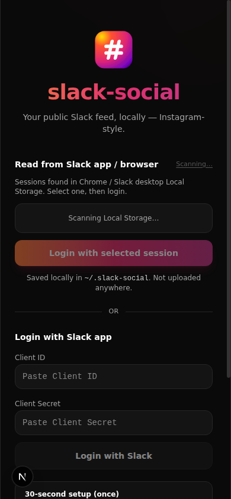
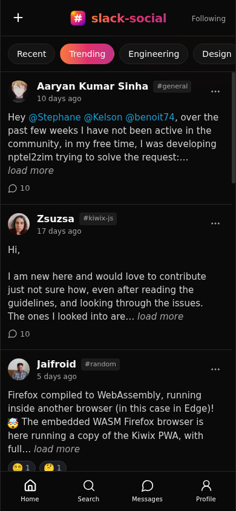
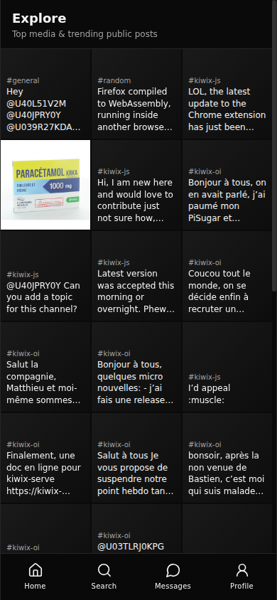

A real feed
Trending posts from public channels, ranked for what’s worth your attention — not buried under notification noise.
Make work fun. Find friends on Slack.
Your workspace already has the good stuff — wins, memes, shoutouts, late-night ideas. slack-social turns public Slack into a beautiful social feed that runs entirely on your machine.



Slack is where work happens. slack-social is where work feels social again.
Trending posts from public channels, ranked for what’s worth your attention — not buried under notification noise.
Profiles, follows, and the humans behind the handles. Coffee-chat energy, not just another #general scroll.
Top media and public posts in a glanceable grid. Discover what your workspace is actually buzzing about.
Indexed locally in SQLite under ~/.slack-social. Your data. Your machine. Zero cloud drama.
Same public activity. Completely different experience.
Straight answers for humans — and for AI search engines that cite sources.
slack-social is an open-source local app that indexes public Slack workspace activity into SQLite and serves an Instagram-style social feed on localhost. Use it to make work fun and find friends on Slack.
Slack is channel-first. slack-social is people-and-feed-first: trending posts, explore, profiles, and follows — so you scroll vibes instead of channel lists.
No cloud storage by the app. Posts, media cache, and credentials live under ~/.slack-social on your machine.
Teams and communities that live in Slack and want a friendlier way to discover people, wins, and culture across public channels.
One command to start. Login once. Scroll forever.
Requires Bun.
npx slack-social demoTrial mode with dummy data — no Slack login. For your real workspace:
npx slack-social serveOpen localhost:3000 → start scrolling.
Open source under GPLv3. Fork it, check it out, ship a PR.
git clone https://github.com/yash1ts/slack-social.git
cd slack-social
bun install
bun run slack-social serveDocs, bugs, UI polish, feed ideas — all welcome. See the contributing guide for how we work.